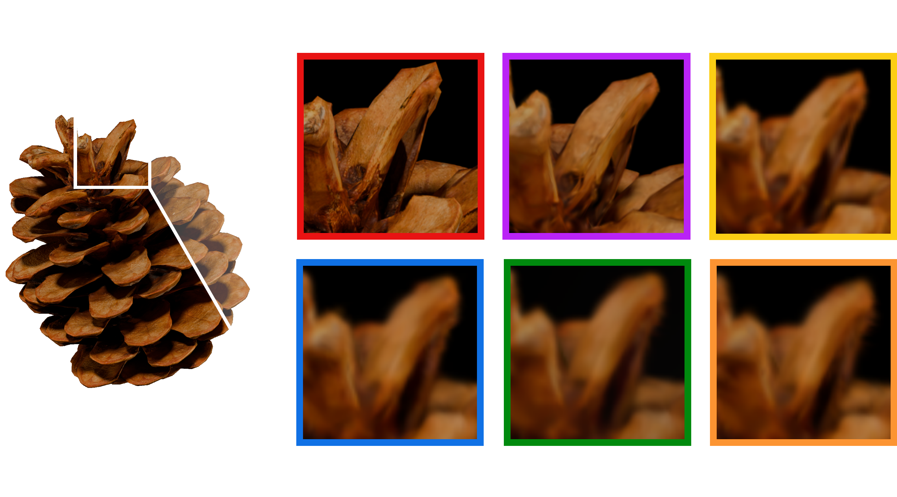

Reconstructing sub-millimeter detail of small objects underpins tasks such as circuit-board defect detection, specimen digitization, and archiving. 3D Gaussian Splatting (3DGS) makes photorealistic reconstruction possible from posed images alone, but macro optics violate two conditions it depends on. The field of view (FOV) and the depth of field (DoF) shrink to millimeters, so viewpoint error can take a sample out of frame, and only a thin focal plane is sharp in frame. Existing automated macro-capture rigs handle the shallow DoF with per-view focus stacking, but typically rely on classical photogrammetry and offline, human-in-the-loop processing. We present MicroSplat, which generates a 3DGS using a low-cost consumer microscope on a manipulator arm. After a single up-front object-localization step, the system runs unattended. It performs calibration, plans collision-free viewpoints, captures and fuses a focal stack at each viewpoint, segments the object across all views, and optimizes a 3DGS model warm-started with the arm's own poses. We further compare against blur-aware 3DGS methods, which infer sharp scenes from defocused images, and find that measuring sharpness with a controlled focal sweep outperforms inferring it. We provide real and synthetic datasets (including robot and camera parameters) and the fitted 3DGS reconstructions.
We quantitatively evaluate focus stacking in simulation because no reliable ground truth exists for the real captures: every real image is degraded by the shallow DoF the pipeline is designed to correct, so there is no in-focus reference to score against. We therefore generate a synthetic Blender dataset of eight samples, modeled after the same objects as the real-world set, and compare against vanilla 3DGS and three blur-aware 3DGS methods (BAGS, CoCoGaussian, and Deblurring 3DGS) using ground-truth in-focus renderings.
| Method | Almond | Blueberry | Bolt | Circuit | Flower | Pinecone | Rock | Seashell | Mean |
|---|---|---|---|---|---|---|---|---|---|
| Vanilla 3DGS | 27.58 | 25.24 | 22.70 | 18.18 | 23.68 | 23.47 | 30.63 | 28.03 | 24.94 |
| CoCoGaussian | 27.31 | 24.57 | 18.72 | 17.97 | 20.02 | 18.60 | 29.51 | 27.01 | 22.96 |
| Deblurring 3DGS | 26.32 | 23.30 | 18.83 | 17.53 | 22.78 | 19.25 | 29.93 | 24.64 | 22.82 |
| BAGS | 29.48 | 27.21 | 22.78 | 19.77 | 26.59 | 26.29 | 32.70 | 30.64 | 26.93 |
| Ours | 33.49 | 37.45 | 36.06 | 39.53 | 32.17 | 41.68 | 45.39 | 45.13 | 38.86 |
| Method | Almond | Blueberry | Bolt | Circuit | Flower | Pinecone | Rock | Seashell | Mean |
|---|---|---|---|---|---|---|---|---|---|
| Vanilla 3DGS | 0.65 | 0.75 | 0.59 | 0.48 | 0.74 | 0.59 | 0.77 | 0.86 | 0.68 |
| CoCoGaussian | 0.64 | 0.71 | 0.39 | 0.48 | 0.62 | 0.51 | 0.75 | 0.83 | 0.62 |
| Deblurring 3DGS | 0.62 | 0.66 | 0.41 | 0.46 | 0.74 | 0.51 | 0.77 | 0.79 | 0.62 |
| BAGS | 0.70 | 0.79 | 0.59 | 0.56 | 0.79 | 0.68 | 0.80 | 0.89 | 0.72 |
| Ours | 0.96 | 0.98 | 0.97 | 0.99 | 0.95 | 0.99 | 0.99 | 1.00 | 0.98 |
| Method | Almond | Blueberry | Bolt | Circuit | Flower | Pinecone | Rock | Seashell | Mean |
|---|---|---|---|---|---|---|---|---|---|
| Vanilla 3DGS | 0.20 | 0.29 | 0.17 | 0.16 | 0.18 | 0.25 | 0.22 | 0.16 | 0.20 |
| CoCoGaussian | 0.19 | 0.30 | 0.20 | 0.15 | 0.19 | 0.30 | 0.22 | 0.15 | 0.21 |
| Deblurring 3DGS | 0.21 | 0.29 | 0.21 | 0.17 | 0.18 | 0.29 | 0.22 | 0.17 | 0.22 |
| BAGS | 0.17 | 0.26 | 0.16 | 0.14 | 0.16 | 0.20 | 0.19 | 0.14 | 0.18 |
| Ours | 0.06 | 0.02 | 0.04 | 0.01 | 0.06 | 0.01 | 0.01 | 0.01 | 0.03 |
Quantitative comparison across all samples in the synthetic dataset. Best result per column is highlighted, second best underlined. Mean is the average over the eight objects.

The synthetic dataset controls lighting, exposure, and white balance; the real captures have none of these guarantees, so these results demonstrate the pipeline's ability to extrapolate to our low-cost microscope. Many of the reconstructions are difficult to distinguish from photographs. Intricate detail survives: the peeling skin on the almond, the flap on the blueberry, and even the text on the circuit board, whose characters are roughly 0.4 mm wide.
Click any scene below to open it in a live, interactive viewer.